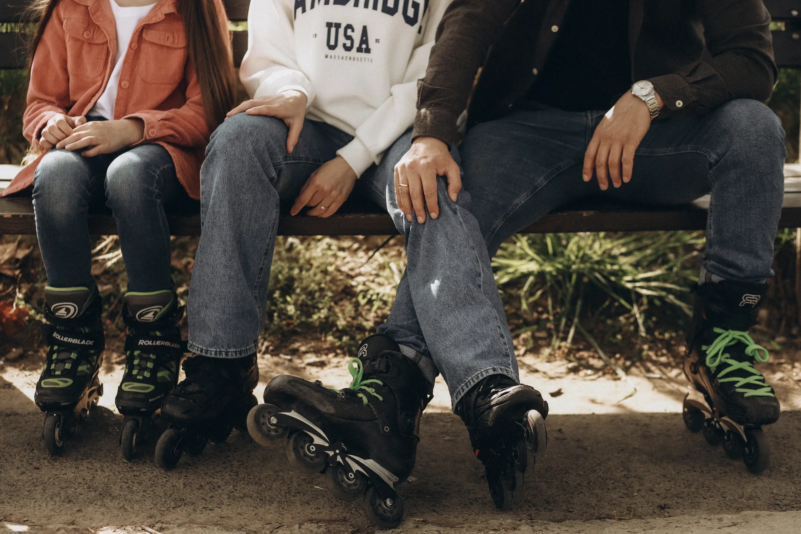
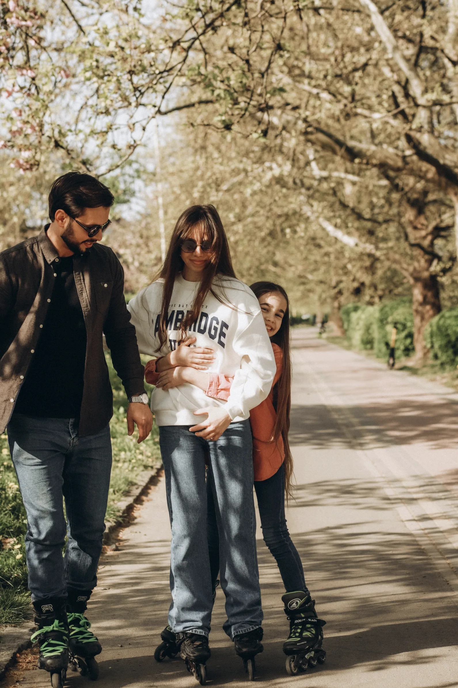
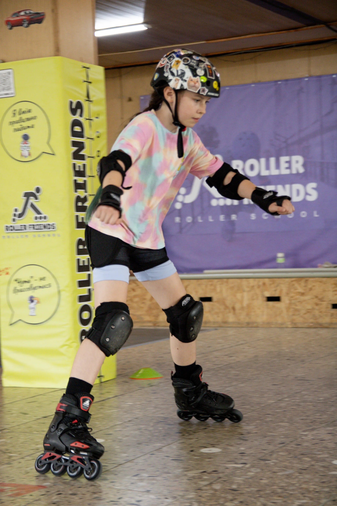
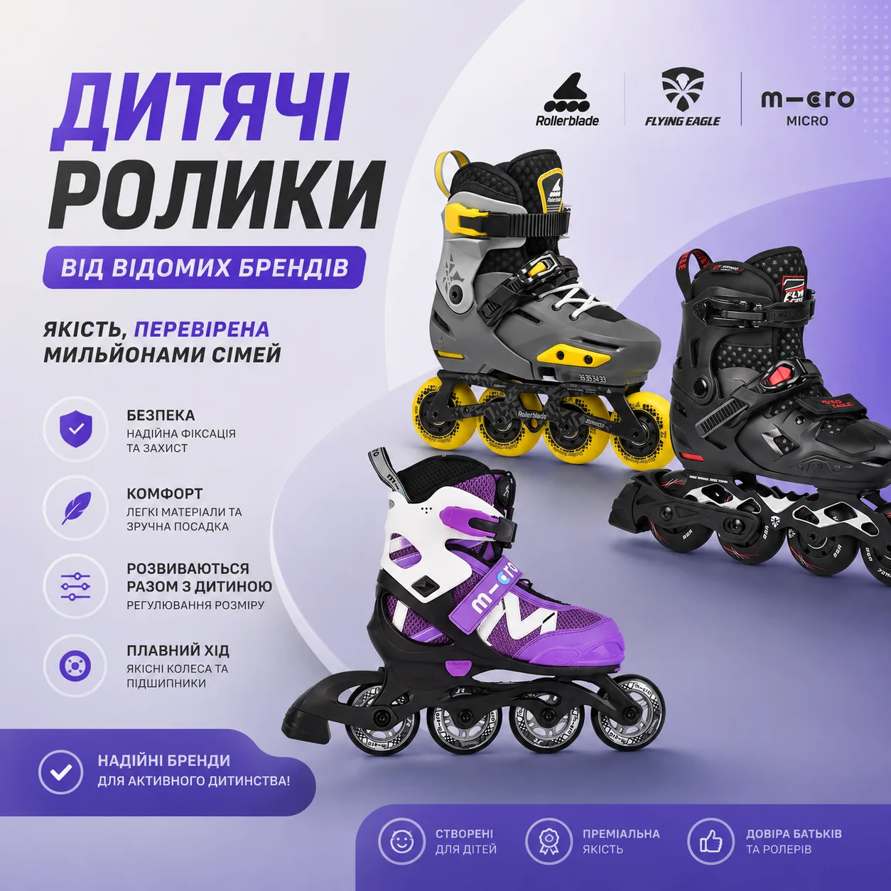
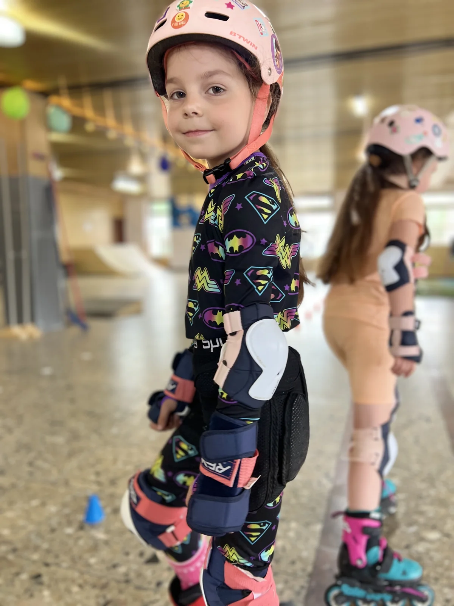
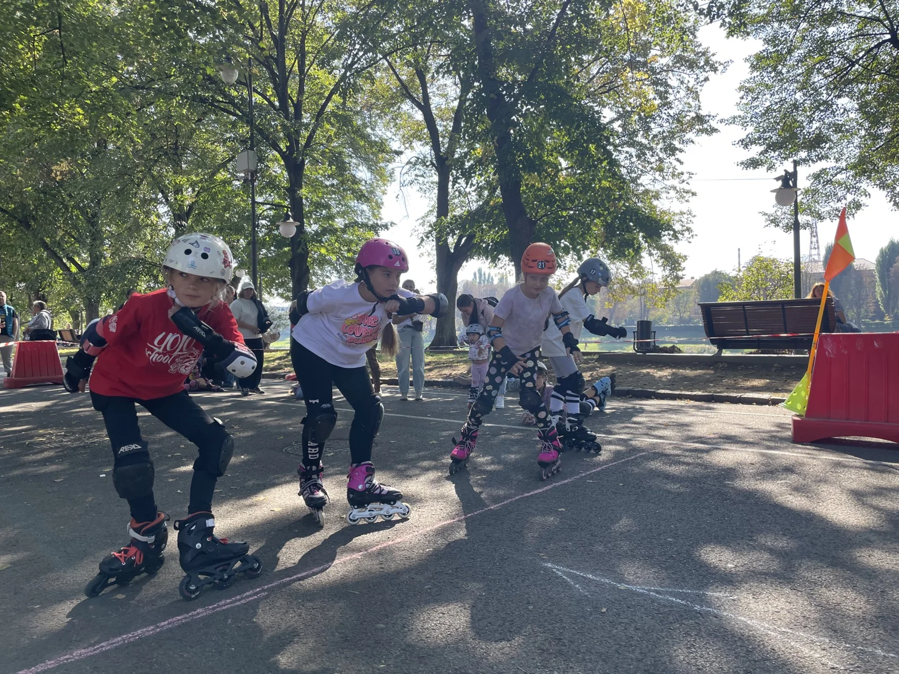
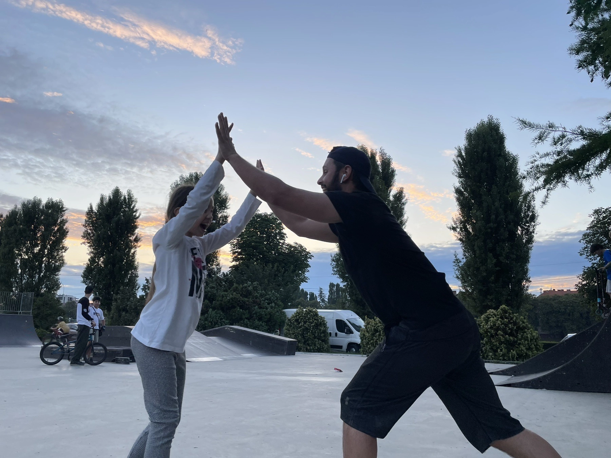

Roller Friends roller school

Свій темп · друзі · активний відпочинок
Вільне катання на роликах
Приходьте зі своїми роликами або скористайтеся прокатом — катайтеся самостійно, разом із рідними чи друзями.
Перед відвідуванням
Коротко про головне
Вільне катання доступне, коли воно не заважає тренуванням школи. Перед візитом радимо уточнити розклад і наявність місць.
- Діти до 14 років перебувають на майданчику з повнолітньою особою.
- Для дітей до 14 років і початківців шолом та захист є обов’язковими.
- Прокат роликів, шолома й захисту оплачується окремо.
- Тренувальний інвентар використовують лише з дозволу працівника школи.
Відкрити зміст сторінки
01
Катайтеся у власному темпі
Майданчик відкритий для самостійного катання з рідними та друзями.

Активний відпочинок
Катання без тренувальної програми
Тренувальний майданчик Roller Friends відкритий для всіх охочих. Ви можете приходити зі своїми роликами та кататися самостійно, разом із рідними або друзями.
Вільне катання не є тренуванням з інструктором і не передбачає навчання за програмою ролер-школи або підготовки до змагань.
02
Правила перебування на майданчику
Безпечний рух, повага до інших і виконання вказівок працівників школи.

Безпека передусім
Спільний майданчик — спільні правила
Вільне катання проводиться за умови, що воно не заважає основним тренуванням ролер-школи. Конусами, тренувальними фігурами та іншим спортивним інвентарем можна користуватися лише з дозволу адміністратора або інструктора.
Відвідувачі повинні дотримуватися правил безпеки, поважати інших учасників і виконувати вказівки працівників школи. Використання шолома та захисту наполегливо рекомендується. Діти, які ще не можуть безпечно кататися самостійно, повинні перебувати під наглядом дорослих.
Перед відвідуванням радимо уточнити розклад і доступність майданчика.
03
Прокат і магазин
Спорядження можна взяти напрокат або придбати й одразу випробувати на майданчику.

Усе необхідне на місці
Ролики, шолом і комплект захисту
Якщо у вас немає власного спорядження, у школі можна взяти напрокат роликові ковзани, шолом і комплект захисту. Вартість прокату оплачується окремо.
Також у нас можна придбати нові ролики та необхідне спортивне спорядження, підібрати відповідний розмір і відразу випробувати покупку на майданчику.
04
Вартість і тривалість
Одна зрозуміла ціна для катання зі своїми роликами тривалістю до двох годин.

Проста вартість
100 грн до 2 годин
Вхід на тренувальний майданчик зі своїми роликами — 100 грн за одну особу до 2 годин.
Вартість залишається однаковою незалежно від того, катаєтеся ви 30 хвилин, одну годину чи півтори години. Прокат роликів і захисного спорядження оплачується окремо.
Адміністратор фіксує час початку катання. Відлік завершується, коли відвідувач припиняє катання, повертає прокатне спорядження та звертається до адміністратора для розрахунку.
05
Вигідні пропозиції
Спеціальна ціна для сім’ї та пробний комплект для першого знайомства з роликами.

Катайтеся разом
Більше вражень — вигідніша ціна
06
Основні правила вільного катання
Короткий перелік умов, які допомагають усім кататися комфортно й безпечно.

П’ять важливих правил
Безпека для кожного
- Діти до 14 років можуть перебувати на майданчику лише в супроводі повнолітньої особи.
- Для дітей до 14 років і початківців шолом та комплект захисту є обов’язковими.
- Вільне катання не повинно заважати тренуванням ролер-школи та іншим відвідувачам.
- Дітям заборонено самостійно використовувати або пересувати тренувальні фігури, конуси та інший інвентар. Це дозволяється лише за погодженням з адміністратором або інструктором.
- Відвідувачі повинні дотримуватися безпечної швидкості, дистанції та виконувати вказівки працівників школи.
Перед відвідуванням рекомендуємо ознайомитися з повними правилами перебування на тренувальному майданчику.
Переглянути повні правила